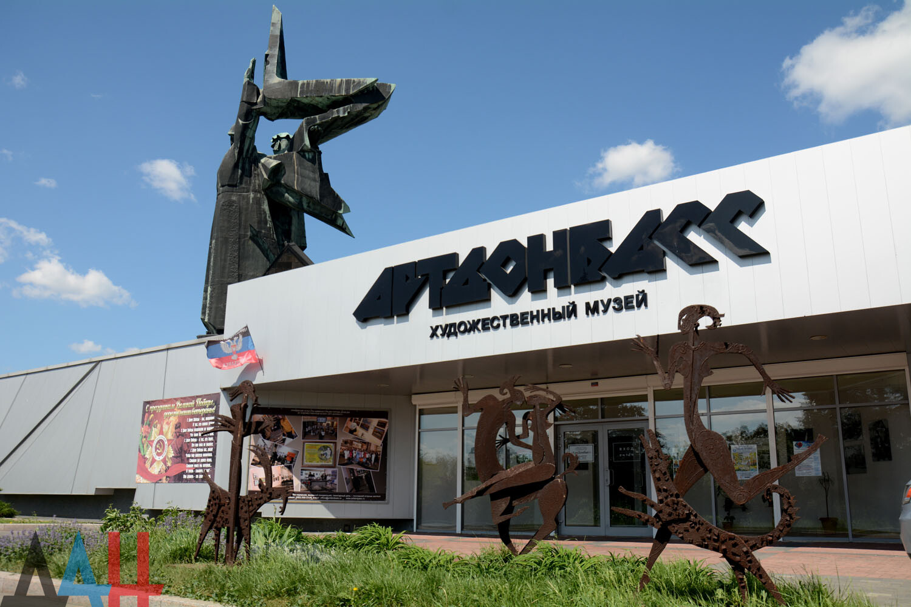
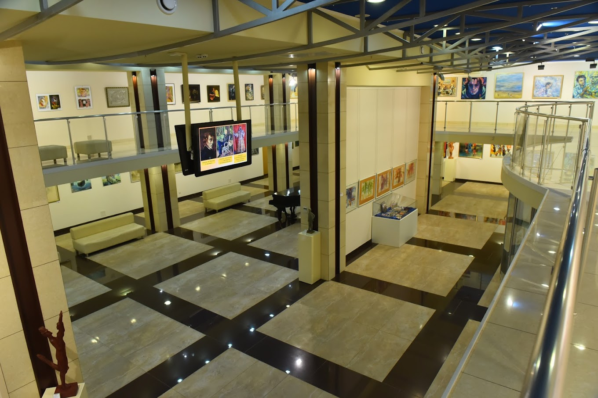

Художественно-выставочный центр "АртДонбасс"
Открыт 26 августа 2011 года ко Дню города Донецка и Дню шахтера как Художественно-выставочный центр «Арт-Донбасс». В мае 2017 распоряжением главы администрации города Донецка переименован в Художественный музей «Арт-Донбасс».
«Арт-Донбасс» - современное выставочное пространство Донбасса, основным направлением деятельности, которого является работа по популяризации, пропаганде и развитию культуры Донбасса. За 10 лет было организовано и реализовано более 380 стационарных и передвижных выставок, художественных проектов, проведенных совместно с посольствами Греции, Германии, Польши, Чехии, Франции, а также министерством культуры Российской Федерации. Художественный музей «Арт-Донбасс» подписал семнадцать «Соглашений о партнерском сотрудничестве» с ведущими музеями Санкт-Петербурга и Ленинградской области, Московской области, Оренбурга, Ульяновска, Пензы, Мордовской Республики, Ярославля, Рязани, Воронежа, Астрахани, ОО «Совет музеев Приволжского Федерального округа». С музеями Владивостока, Южно-Сахалинска, Таганрога, Москвы проведены обменные выставки и есть новые, долгосрочные, творческие планы. Проекты, которые проводит и поддерживает ХM «Арт-Донбасс» существенно влияют на развитие и поддержание высокого уровня культуры Донбасса, его граждан, ценителей прекрасного и самих художников, отражая актуальные процессы и современные тенденции в мировом искусстве. Разработаны специальные программы, позволяющие дончанам почувствовать себя в центре интересных культурных событий национального и международного значения. В рамках этих программ также проводятся мероприятия, направленные на развитие творческой среды региона – конкурсы, пленэры, тематические встречи, культурологические семинары, конференции и презентации. На базе ХМ «Арт-Донбасс» активно работает творческий союз «Союз фотохудожников ДНР».
